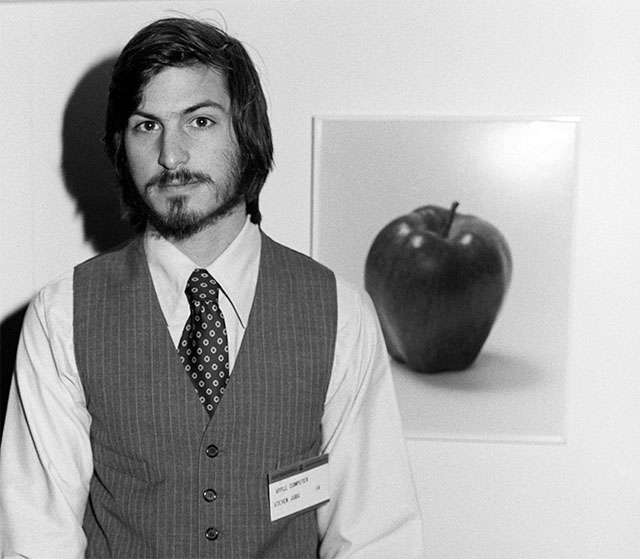

Steve Jobs 賈伯斯
史蒂芬·保羅·賈伯斯（英語：Steven Paul Jobs，1955年2月24日－2011年10月5日），通稱史蒂夫·賈伯斯（英語：Steve Jobs），是一名美國企業家、行銷家和發明家，蘋果公司的聯合創始人之一，曾任董事長及執行長職位，NeXT創辦人及執行長，也是皮克斯動畫的創辦人並曾任執行長，2006年為華特迪士尼公司的董事會成員。2017年9月蘋果發布會舉行的地方，以他命名為 Steve Jobs Theater 。
他被譽為《玩具總動員》（1995年）的執行製片人。他一直擔任皮克斯動畫的執行長並持有50.1%的股份，直到公司在2006年被華特迪士尼公司收購，此項收購使賈伯斯成為迪士尼公司的最大個人股東（有7.4%的股份）及董事會成員。在1996年，蘋果公司董事會決議買下NeXT公司，把賈伯斯帶回他參與創立，卻正在垂死邊緣的蘋果公司擔任臨時CEO。他在2000年起成為正式CEO，帶領蘋果輝煌的iPod、iPhone、iPad時代的到來。從2003年10月起，賈伯斯與胰腺神經內分泌腫瘤奮戰了8年，最終於2011年8月辭任執行長一職，在他第3次病假期間，賈伯斯當選為蘋果公司的董事長。
賈伯斯在1970年代末與蘋果公司另一始創人史蒂夫·沃茲尼克及首任投資者邁克·馬庫拉協同其他人設計、開發及銷售Apple II系列。在1980年代初，賈伯斯是最早看到全錄帕洛奧圖中心（Xerox PARC）的滑鼠驅動圖形用戶介面的商業潛力，並將其應用於Apple Lisa及一年後的麥金塔電腦。 1985年，在董事會的鬥爭失勢後，賈伯斯離開蘋果公司及成立了NeXT公司(一間電腦平台開發公司，專門從事高等教育及商業市場)在1986年，他收購了盧卡斯影業的電腦繪圖部門，成立了皮克斯（Pixar）。他被譽為《玩具總動員》（1995年）的執行製片人。他一直擔任皮克斯動畫的執行長並持有50.1%的股份，直到公司在2006年被華特迪士尼公司收購，此項收購使賈伯斯成為迪士尼公司的最大個人股東（有7.4%的股份）及董事會成員。在1996年，蘋果公司董事會決議買下NeXT公司，把賈伯斯帶回他參與創立，卻正在垂死邊緣的蘋果公司擔任臨時CEO。他在2000年起成為正式CEO，帶領蘋果輝煌的iPod、iPhone、iPad時代的到來。從2003年10月起，賈伯斯與胰腺神經內分泌腫瘤奮戰了8年，最終於2011年8月辭任執行長一職，在他第3次病假期間，賈伯斯當選為蘋果公司的董事長。
賈伯斯在1970年代末與蘋果公司另一始創人史蒂夫·沃茲尼克及首任投資者邁克·馬庫拉協同其他人設計、開發及銷售Apple II系列。在1980年代初，賈伯斯是最早看到全錄帕洛奧圖中心（Xerox PARC）的滑鼠驅動圖形用戶介面的商業潛力，並將其應用於Apple Lisa及一年後的麥金塔電腦。 1985年，在董事會的鬥爭失勢後，賈伯斯離開蘋果公司及成立了NeXT公司(一間電腦平台開發公司，專門從事高等教育及商業市場)在1986年，他收購了盧卡斯影業的電腦繪圖部門，成立了皮克斯（Pixar）。他被譽為《玩具總動員》（1995年）的執行製片人。他一直擔任皮克斯動畫的執行長並持有50.1%的股份，直到公司在2006年被華特迪士尼公司收購，此項收購使賈伯斯成為迪士尼公司的最大個人股東（有7.4%的股份）及董事會成員。在1996年，蘋果公司董事會決議買下NeXT公司，把賈伯斯帶回他參與創立，卻正在垂死邊緣的蘋果公司擔任臨時CEO。他在2000年起成為正式CEO，帶領蘋果輝煌的iPod、iPhone、iPad時代的到來。從2003年10月起，賈伯斯與胰腺神經內分泌腫瘤奮戰了8年，最終於2011年8月辭任執行長一職，在他第3次病假期間，賈伯斯當選為蘋果公司的董事長。
在他生活的年代裡，賈伯斯被認為是電腦業界與娛樂業界的標誌性人物，同時人們也把他視作麥金塔電腦、iPod、iPhone、iPad等知名數位產品的締造者。他亦曾七次登上《時代雜誌》的封面，被認為是當時全球最為成功的商人之一。2007年，賈伯斯被《財富》雜誌評為了年度最強有力商人。賈伯斯的生涯極大地影響了矽谷風險創業的傳奇，他將美學至上的設計理念在世界上推廣開。他對簡約及便利設計的推崇為他贏得了許多忠實追隨者。